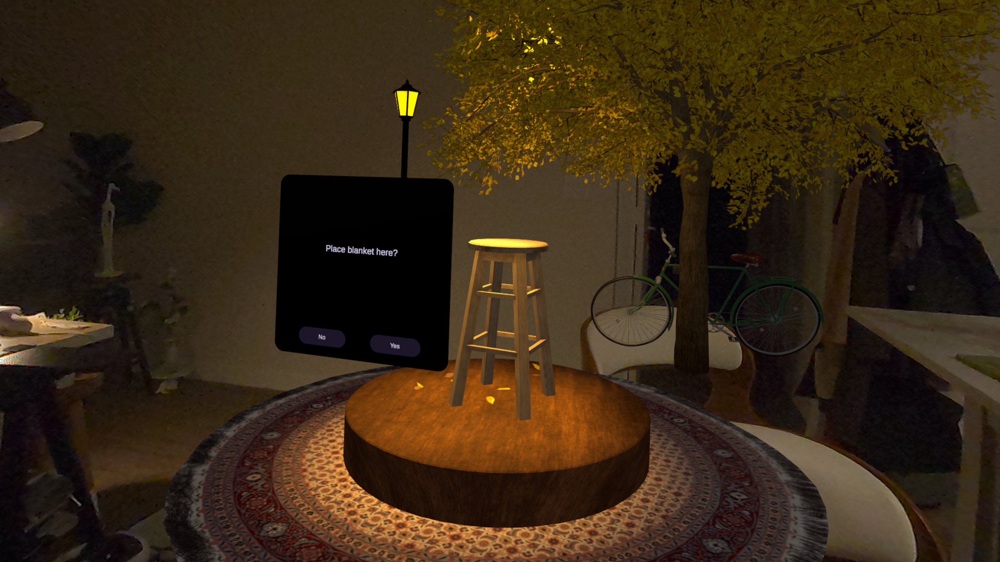
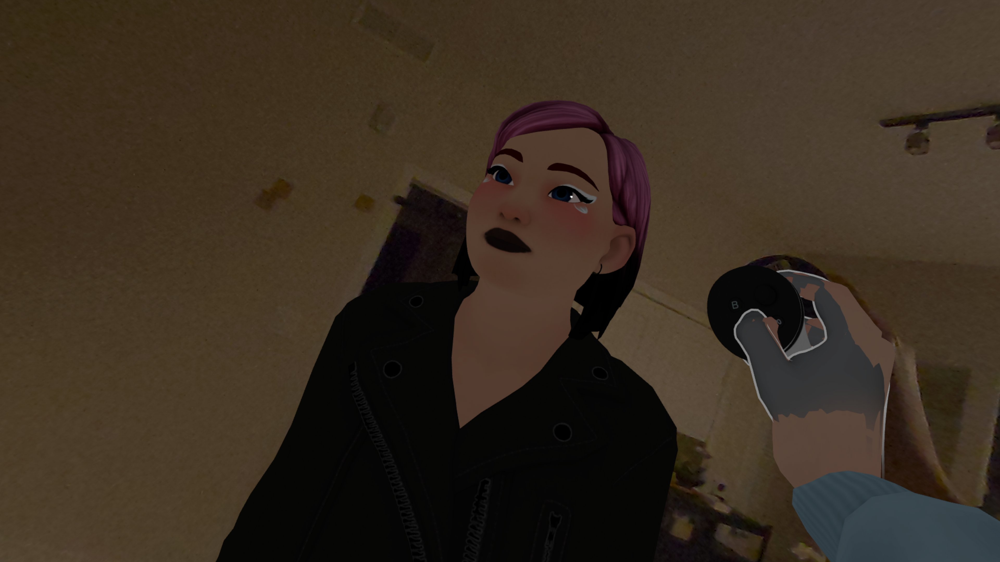
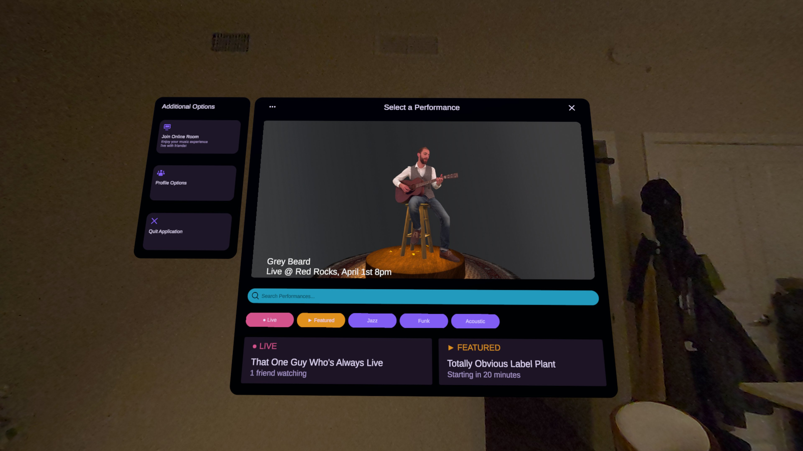
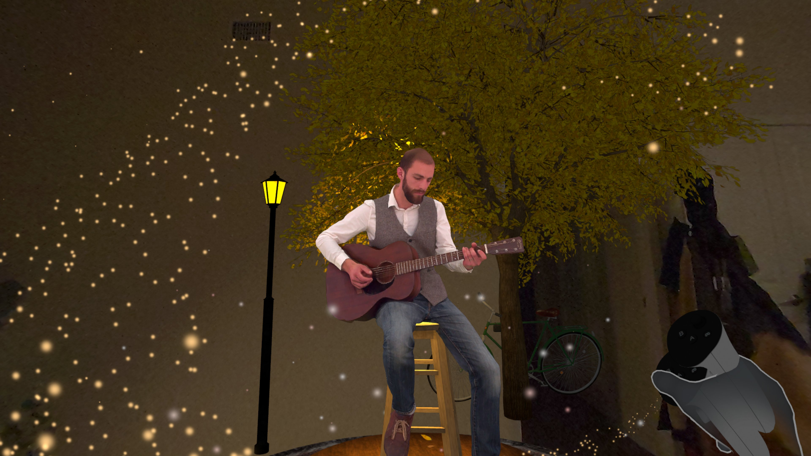

A Mixed Reality Concert Experience
that lets you enjoy Live Concert anywhere with anyone.
The Problem
Concerts are becoming harder to access: cost, travel, time, distance, and accessibility barriers. For many people, watching from home is the only realistic option, but today's livestreams rarely feel shared, immersive, or alive.
Existing livestream platforms make concerts viewable, but they still feel passive and distant. They do not recreate the energy of being in the same space, reacting in the moment, or experiencing a performance together with friends.
Convio is a Mixed Reality concert experience that explores a more social and immersive alternative. Users can choose a show, place a virtual blanket and stage in their own space, and enjoy the concert from home in a way that feels more present and interactive.
The experience can be enjoyed solo or online with friends. In shared mode, users can see one another as avatars, hear each other through live voice chat, and interact with the concert through hand-drawn visual effects and other immersive elements.
This version is a headset-based proof of concept. Our long-term vision is to bring the experience to XR glasses, making it lighter, more comfortable, and more natural for everyday concert experiences.
The Experience
A shared Mixed Reality concert experience that brings live-feeling performances into your own space, whether you want to enjoy them alone or with friends.
Demo Video
Watch the demo video of Convio.
Understand more about this project.
Project Visuals
From concept art to working Unity builds, this is the visual evolution of Convio across research, design, and prototyping phases.

AR Concert Scene — Blanket and Stage
Avatar - Meta
UI
VFXResearch & Process
A semester of discovery, pivoting, and building — guided by user research and a commitment to designing for those who need it most.
Documentation
The public documentation journal captures the full arc — every research sprint, design decision, technical challenge, and iteration that led to this prototype.
Credits & Acknowledgements
A capstone project from the University of Miami, built with research rigor, creative ambition, and a lot of Unity debugging.